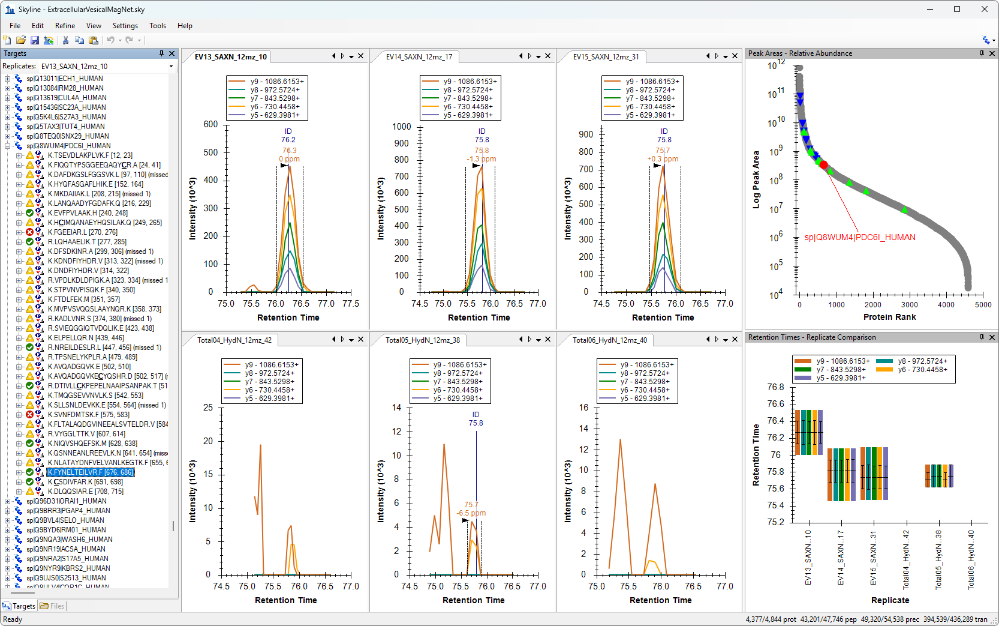
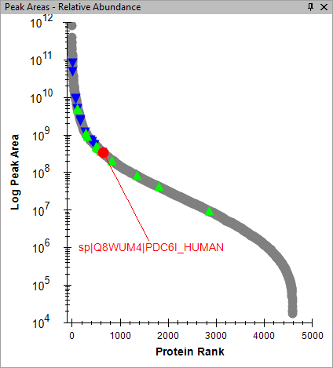
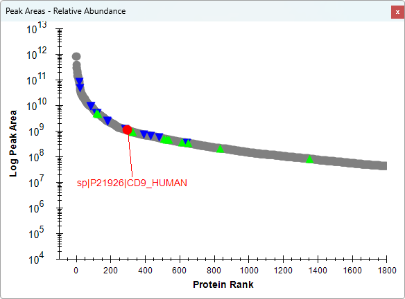
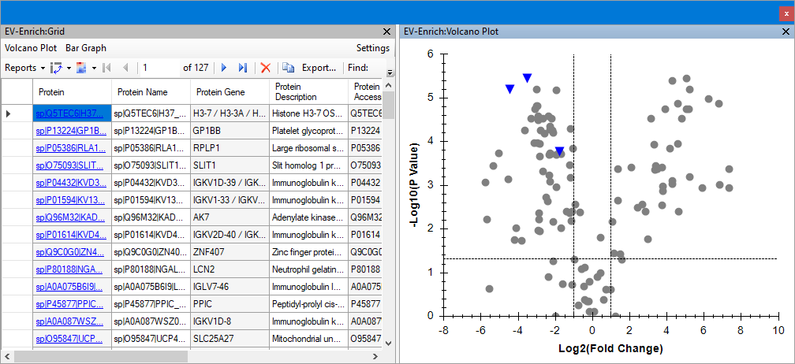
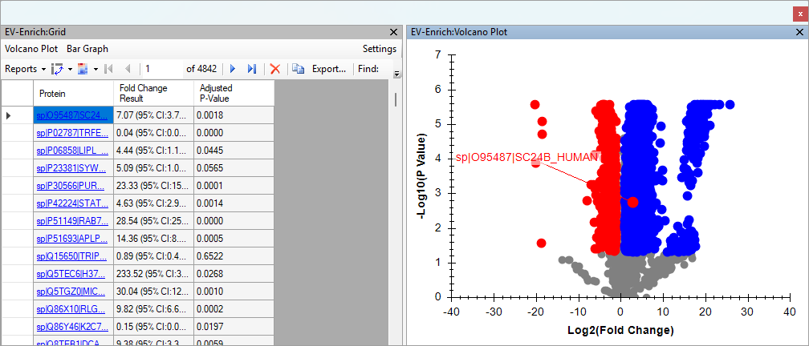

To start this tutorial, download the following ZIP file:
https://skyline.ms/tutorials/PeakImputationDia.zip
Extract the files in it to a folder on your computer, like:
C:\Users\brendanx\Documents
This will create a new folder:
C:\Users\brendanx\Documents\PeakImputationDia
The "Protein Areas" is a report definition which is included in the 2025-DIA-Webinar-MagNet document. The report has one row per Protein in the document, and the Protein Abundance values for each replicate are displayed in different columns. Many of the Protein Abundance cells in the grid have a red exclamation mark which indicates that the abundance value for that replicate cannot be reliably compared between replicates because the peaks for some of the peptides have not been chosen.


This displays the results of the "EV-Enrich" group comparison. The number of rows in the grid is much less than the total number of proteins in the document because the replicates where a protein had peptides with missing peaks are excluded from that protein's group comparison. To display the volcano plot, do the following:
The missing peptide peaks are in replicates where the DIA-NN peptide search engine was unable to confidentally identify a peak. In general, the replicates with lower abundance will tend to be the ones where the peak was not confidentally identified, but certainly not in all cases. You can modify the group comparison to tell Skyline to treat the replicates with missing peaks as if the peak had zero area.

After you make that change to the group comparison definition, the grid will have one row for each protein in the document and the volcano plot will have more points.

The volcano plot remains zoomed in on the subset of data that existed before the change to the group comparison settings. Closing and reopening the volcano plot will reset its display to the default amount of zoom for the data that is displaying.

The distinct sections in the volcano plot come from the unnaturalness of treating missing valuse as zero.
It would be better to tell Skyline to integrate whatever signal is in the expected location on the chromatogram instead of always using the value zero.
Peptide Settings
Prediction
tab.
